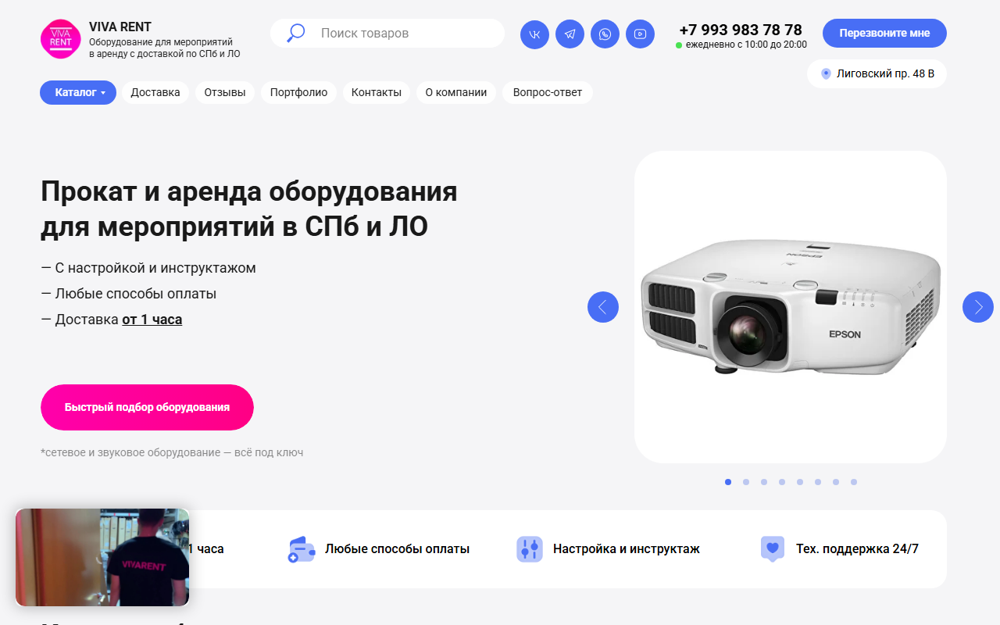

Прокат оборудования для мероприятий в Петербурге: с 55 до 950 визитов из поиска за три месяца
Пик — 948 визитов в декабре 2025, на третий месяц работ. После завершения активной фазы сайт держится на 580–710 визитах в месяц: среднее за июнь–август 2026 — 653 против 55 до старта, рост в 11,9 раза.
На старте, октябрь 2025: сайт на Tilda собран заново, 50–60 визитов из поиска в месяц, 53 страницы в поиске Яндекса. Трафик прежнего сайта на этом домене к проекту не относится.

Было → стало
| Показатель | Было | Стало | Δ |
|---|---|---|---|
| Визиты из поиска в месяц | 55 | 653 | ×11,9 |
| Пик, визитов в месяц | — | 948 | 3-й месяц |
| Из них из Google | 16 | 222 | ×14 |
| Страниц в поиске Яндекса | 53 | 331 | +278 |
| Запросов в топ-10 Яндекса | — | 40 из 78 | — |
| Обращений из поиска в месяц | — | ≈40 | — |
| ИКС | 10 | 30 | +20 |
База: среднее за июль–сентябрь 2025. Замер: среднее за июнь–август 2026. Позиции — Топвизор, Санкт-Петербург, снимок от 3 сентября 2026. Страницы в поиске и ИКС — Яндекс.Вебмастер.
С чем пришли
- Сайт на Tilda собран заново: 53 страницы в поиске, под виды оборудования — проекторы, экраны, свет, фотозоны — отдельных страниц не было.
- 50–60 визитов из поиска в месяц, то есть практически с нуля.
- Вопросы, с которыми арендаторы приходят в поиск — «как подключить проектор к телефону», «нет звука с колонки» — сайт не собирал вообще.
Что сделали
Предпроектный анализ и семантика
Разобрали спрос по видам оборудования и по задачам арендаторов, собрали ядро и разложили его по будущим посадочным.
Пересобрали сайт на Tilda в новом дизайне
Каталог развели по видам оборудования: у проекторов, экранов, света, звука и фотозон — свои страницы с условиями аренды.
Тексты и раздел инструкций
Написали тексты для коммерческих страниц и запустили инструкции по оборудованию под реальные вопросы арендаторов. Сейчас пять из шести самых посещаемых страниц из поиска — это они.
Этап разгона: внешнее продвижение в Яндексе
Первые месяцы после запуска сайт поддерживали внешним продвижением: на третий месяц вышли на 948 визитов. Затем этап завершили — позиции сайт удерживает самостоятельно.
Учет обращений
Формы, заказ звонка и мессенджеры считаются целями Метрики — по проекту видны обращения, а не только трафик.
Проверить самому
Как считали
- Трафик
- Яндекс.Метрика, переходы из поисковых систем, вся органика включая бренд. База — среднее за три месяца до старта (июль–сентябрь 2025), замер — среднее за последние три месяца (июнь–август 2026).
- Точка отсчета
- Сайт на домене собран заново в 2025 году, трафик прежнего сайта в расчет не входит.
- Обращения
- Цели Метрики по визитам из поиска, июнь–август 2026.
- Окупаемость
- Считаем только там, где клиент дает число продаж и средний чек.
- Чего не утверждаем
- Не приписываем себе весь рост бизнеса клиента. Не обещаем повторить результат.
Сдаете оборудование, площадки или технику в аренду?
Напишите мне в Telegram адрес сайта — посмотрю спрос в вашем городе, конкурентов в выдаче и скажу, что из этого кейса переносится на вас, а что нет.